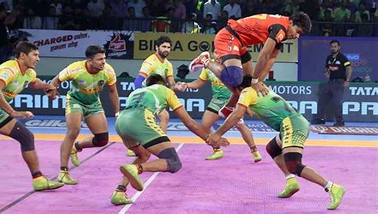

Kabaddi
Kabaddi is a contact team sport where players from two teams take turns sending a "raider" into the opponent’s half to tag defenders and return without being tackled, all in a single breath. It is popular in South Asia, especially India, and is played in formats like **circle style** and **indoor style**.

Rules
- Each team has 7 players on court.
- A raider enters the opponent’s half, chanting "kabaddi," to tag defenders and return before losing breath.
- The raider scores points for each defender tagged; defenders score by tackling and stopping the raider.
- Players put out leave the court but return when their team scores.
- The team with the most points at the end wins.